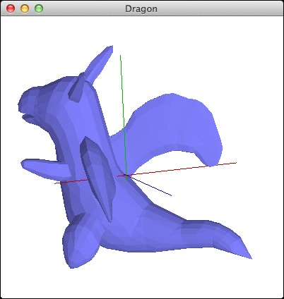
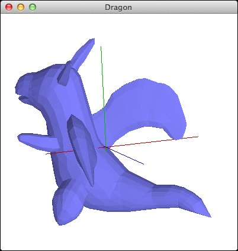
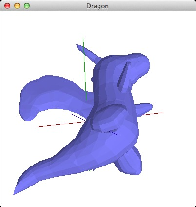
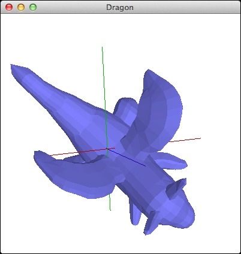
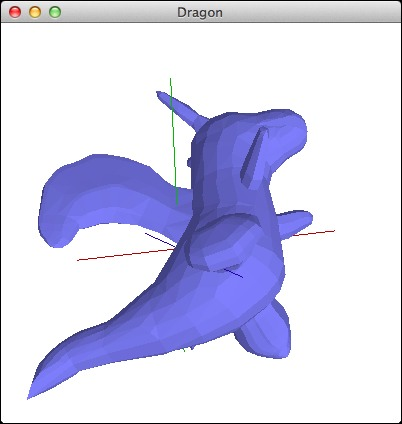
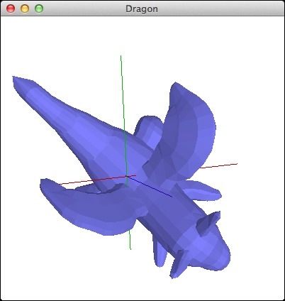

 
前回では、ビューにX軸の回転角・Y軸の回転角・Z軸の回転角を用意して、x方向量とy方向量から回転量を算出して回転角を設定できるようにしました。今回では、それらのビューの回転機能を、コントローラから利用して、描き出されているドラゴンをマウスでつかんで、グルグルと回転させ、横や後ろ上や下からも見られるようにしましょう。そのためには、マウス関連リスナーを実装しなければなりません。つかんでグルグルするのですから、マウスボタンが押された時とマウスドラッグの時のイベント処理が大切になります。以下の差分（変更箇所：編集部分）やクラス階層（インヘリタンス）を参考にしながら、それに続くソースコード（Version 7）と同じになるように、プログラムを編集・加筆してください。
【前バージョンからの差分＝変更箇所】【ファイルやディレクトリの増減】 ======================================== Compare: ./Version6 1: dragon/Dragon.java 2: dragon/Example.java 3: mvc4jogl/OpenGLCompound.java 4: mvc4jogl/OpenGLController.java 5: mvc4jogl/OpenGLModel.java 6: mvc4jogl/OpenGLObject.java 7: mvc4jogl/OpenGLPolygon.java 8: mvc4jogl/OpenGLProjection.java 9: mvc4jogl/OpenGLTriangle.java 10: mvc4jogl/OpenGLView.java 11: mvc4jogl/Teapot.java with: ./Version7 1: dragon/Dragon.java 2: dragon/Example.java 3: mvc4jogl/OpenGLCompound.java 4: mvc4jogl/OpenGLController.java 5: mvc4jogl/OpenGLModel.java 6: mvc4jogl/OpenGLObject.java 7: mvc4jogl/OpenGLPolygon.java 8: mvc4jogl/OpenGLProjection.java 9: mvc4jogl/OpenGLTriangle.java 10: mvc4jogl/OpenGLView.java 11: mvc4jogl/Teapot.java ======================================== Added (or Removed) files: ======================================== 【それぞれのファイルの変更】 ---------------------------------------- Compare: ./Version6/dragon/Dragon.java with: ./Version7/dragon/Dragon.java ---------------------------------------- Result: ---------------------------------------- Compare: ./Version6/dragon/Example.java with: ./Version7/dragon/Example.java ---------------------------------------- Result: ---------------------------------------- Compare: ./Version6/mvc4jogl/OpenGLCompound.java with: ./Version7/mvc4jogl/OpenGLCompound.java ---------------------------------------- Result: ---------------------------------------- Compare: ./Version6/mvc4jogl/OpenGLController.java with: ./Version7/mvc4jogl/OpenGLController.java ---------------------------------------- Result: 2a3,7 > import java.awt.event.MouseEvent; > import java.awt.event.MouseListener; > import java.awt.event.MouseMotionListener; > import java.awt.event.MouseWheelEvent; > import java.awt.event.MouseWheelListener; 5a11,12 > import java.awt.Dimension; > 9c16 < public class OpenGLController extends Object implements WindowListener --- > public class OpenGLController extends Object implements MouseListener, MouseMotionListener, MouseWheelListener, WindowListener 21a29,38 > * マウスボタンが押された位置のX座標を記憶するフィールドである。 > */ > protected int mousePressedX; > > /** > * マウスボタンが押された位置のY座標を記憶するフィールドである。 > */ > protected int mousePressedY; > > /** 34a52,162 > // --- MouseListener --------------------------------------------------- > > /** > * ビュー上でマウスボタンをクリック (押してから離す) したときに呼び出される。 > * @param aMouseEvent マウスイベント > */ > public void mouseClicked(MouseEvent aMouseEvent) > { > // System.out.println(aMouseEvent.paramString()); > > return; > } > > /** > * ビューにマウスが入ると呼び出される。 > * @param aMouseEvent マウスイベント > */ > public void mouseEntered(MouseEvent aMouseEvent) > { > // System.out.println(aMouseEvent.paramString()); > > return; > } > > /** > * ビューからマウスが出ると呼び出される。 > * @param aMouseEvent マウスイベント > */ > public void mouseExited(MouseEvent aMouseEvent) > { > // System.out.println(aMouseEvent.paramString()); > > return; > } > > /** > * ビュー上でマウスボタンが押されると呼び出される。 > * @param aMouseEvent マウスイベント > */ > public void mousePressed(MouseEvent aMouseEvent) > { > // System.out.println(aMouseEvent.paramString()); > mousePressedX = aMouseEvent.getX(); > mousePressedY = aMouseEvent.getY(); > > return; > } > > /** > * ビュー上でマウスボタンが離されると呼び出される。 > * @param aMouseEvent マウスイベント > */ > public void mouseReleased(MouseEvent aMouseEvent) > { > // System.out.println(aMouseEvent.paramString()); > > return; > } > > // --------------------------------------------------------------------- > > // --- MouseMotionListener --------------------------------------------- > > /** > * ビュー上でマウスのボタンを押してドラッグすると呼び出される。 > * @param aMouseEvent マウスイベント > */ > public void mouseDragged(MouseEvent aMouseEvent) > { > // System.out.println(aMouseEvent.paramString()); > int x = aMouseEvent.getX(); > int y = aMouseEvent.getY(); > > this.view.rotateXY(x - mousePressedX, mousePressedY - y); > > mousePressedX = x; > mousePressedY = y; > > this.view.canvas().display(); > > return; > } > > /** > * ボタンを押さずに、マウスカーソルをビュー上に移動すると呼び出される。 > * @param aMouseEvent マウスイベント > */ > public void mouseMoved(MouseEvent aMouseEvent) > { > // System.out.println(aMouseEvent.paramString()); > > return; > } > > // --------------------------------------------------------------------- > > // --- MouseWheelListener ---------------------------------------------- > > /** > * マウスホイールが回転すると呼び出される。 > * @param aMouseWheelEvent マウスホイールイベント > */ > public void mouseWheelMoved(MouseWheelEvent aMouseWheelEvent) > { > // System.out.println(aMouseWheelEvent.paramString()); > > return; > } > > // --------------------------------------------------------------------- > ---------------------------------------- Compare: ./Version6/mvc4jogl/OpenGLModel.java with: ./Version7/mvc4jogl/OpenGLModel.java ---------------------------------------- Result: 127a128,129 > aCanvas.addMouseListener(aController); > aCanvas.addMouseMotionListener(aController); ---------------------------------------- Compare: ./Version6/mvc4jogl/OpenGLObject.java with: ./Version7/mvc4jogl/OpenGLObject.java ---------------------------------------- Result: ---------------------------------------- Compare: ./Version6/mvc4jogl/OpenGLPolygon.java with: ./Version7/mvc4jogl/OpenGLPolygon.java ---------------------------------------- Result: ---------------------------------------- Compare: ./Version6/mvc4jogl/OpenGLProjection.java with: ./Version7/mvc4jogl/OpenGLProjection.java ---------------------------------------- Result: ---------------------------------------- Compare: ./Version6/mvc4jogl/OpenGLTriangle.java with: ./Version7/mvc4jogl/OpenGLTriangle.java ---------------------------------------- Result: ---------------------------------------- Compare: ./Version6/mvc4jogl/OpenGLView.java with: ./Version7/mvc4jogl/OpenGLView.java ---------------------------------------- Result: 94c94 < this.angleY = 30.0f; --- > this.angleY = 0.0f; ---------------------------------------- Compare: ./Version6/mvc4jogl/Teapot.java with: ./Version7/mvc4jogl/Teapot.java ---------------------------------------- Result: ----------------------------------------
dragon.Dragon（以前に示したものと同様ゆえに省略）
…
dragon.Example（以前に示したものと同様ゆえに省略）
…
mvc4jogl.OpenGLCompound（以前に示したものと同様ゆえに省略）
…
package mvc4jogl;
import java.awt.event.MouseEvent;
import java.awt.event.MouseListener;
import java.awt.event.MouseMotionListener;
import java.awt.event.MouseWheelEvent;
import java.awt.event.MouseWheelListener;
import java.awt.event.WindowEvent;
import java.awt.event.WindowListener;
import java.awt.Dimension;
/**
* Ｃ：OpenGLを使ったJava三次元グラフィックスのためのコントローラ（Controller）である。
*/
public class OpenGLController extends Object implements MouseListener, MouseMotionListener, MouseWheelListener, WindowListener
{
/**
* モデルを記憶するフィールドである。
*/
protected OpenGLModel model;
/**
* ビューを記憶するフィールドである。
*/
protected OpenGLView view;
/**
* マウスボタンが押された位置のX座標を記憶するフィールドである。
*/
protected int mousePressedX;
/**
* マウスボタンが押された位置のY座標を記憶するフィールドである。
*/
protected int mousePressedY;
/**
* コントローラのコンストラクタである。
* モデルとビューを引数にしてコントローラのインスタンスを応答する。
* @param aModel モデル
* @param aView ビュー
*/
public OpenGLController(OpenGLModel aModel, OpenGLView aView)
{
model = aModel;
view = aView;
return;
}
// --- MouseListener ---------------------------------------------------
/**
* ビュー上でマウスボタンをクリック (押してから離す) したときに呼び出される。
* @param aMouseEvent マウスイベント
*/
public void mouseClicked(MouseEvent aMouseEvent)
{
// System.out.println(aMouseEvent.paramString());
return;
}
/**
* ビューにマウスが入ると呼び出される。
* @param aMouseEvent マウスイベント
*/
public void mouseEntered(MouseEvent aMouseEvent)
{
// System.out.println(aMouseEvent.paramString());
return;
}
/**
* ビューからマウスが出ると呼び出される。
* @param aMouseEvent マウスイベント
*/
public void mouseExited(MouseEvent aMouseEvent)
{
// System.out.println(aMouseEvent.paramString());
return;
}
/**
* ビュー上でマウスボタンが押されると呼び出される。
* @param aMouseEvent マウスイベント
*/
public void mousePressed(MouseEvent aMouseEvent)
{
// System.out.println(aMouseEvent.paramString());
mousePressedX = aMouseEvent.getX();
mousePressedY = aMouseEvent.getY();
return;
}
/**
* ビュー上でマウスボタンが離されると呼び出される。
* @param aMouseEvent マウスイベント
*/
public void mouseReleased(MouseEvent aMouseEvent)
{
// System.out.println(aMouseEvent.paramString());
return;
}
// ---------------------------------------------------------------------
// --- MouseMotionListener ---------------------------------------------
/**
* ビュー上でマウスのボタンを押してドラッグすると呼び出される。
* @param aMouseEvent マウスイベント
*/
public void mouseDragged(MouseEvent aMouseEvent)
{
// System.out.println(aMouseEvent.paramString());
int x = aMouseEvent.getX();
int y = aMouseEvent.getY();
this.view.rotateXY(x - mousePressedX, mousePressedY - y);
mousePressedX = x;
mousePressedY = y;
this.view.canvas().display();
return;
}
/**
* ボタンを押さずに、マウスカーソルをビュー上に移動すると呼び出される。
* @param aMouseEvent マウスイベント
*/
public void mouseMoved(MouseEvent aMouseEvent)
{
// System.out.println(aMouseEvent.paramString());
return;
}
// ---------------------------------------------------------------------
// --- MouseWheelListener ----------------------------------------------
/**
* マウスホイールが回転すると呼び出される。
* @param aMouseWheelEvent マウスホイールイベント
*/
public void mouseWheelMoved(MouseWheelEvent aMouseWheelEvent)
{
// System.out.println(aMouseWheelEvent.paramString());
return;
}
// ---------------------------------------------------------------------
// --- WindowListener --------------------------------------------------
/**
* ウィンドウがに設定されると呼び出される。
* @param aWindowEvent ウィンドウイベント
*/
public void windowActivated(WindowEvent aWindowEvent)
{
// System.out.println(aWindowEvent.paramString());
return;
}
/**
* ウィンドウに対するdisposeの呼び出しの結果として、ウィンドウがクローズされたときに呼び出される。
* @param aWindowEvent ウィンドウイベント
*/
public void windowClosed(WindowEvent aWindowEvent)
{
// System.out.println(aWindowEvent.paramString());
return;
}
/**
* ウィンドウを閉じようとした時に呼び出される。
* @param aWindowEvent ウィンドウイベント
*/
public void windowClosing(WindowEvent aWindowEvent)
{
// System.out.println(aWindowEvent.paramString());
// 終了する。
System.exit(0);
return;
}
/**
* ウィンドウがアクティブでなくなったときに呼び出される。
* @param aWindowEvent ウィンドウイベント
*/
public void windowDeactivated(WindowEvent aWindowEvent)
{
// System.out.println(aWindowEvent.paramString());
return;
}
/**
* ウィンドウが最小化された状態から通常の状態に変更されたときに呼び出される。
* @param aWindowEvent ウィンドウイベント
*/
public void windowDeiconified(WindowEvent aWindowEvent)
{
// System.out.println(aWindowEvent.paramString());
return;
}
/**
* ウィンドウが通常の状態から最小化された状態に変更されたときに呼び出される。
* @param aWindowEvent ウィンドウイベント
*/
public void windowIconified(WindowEvent aWindowEvent)
{
// System.out.println(aWindowEvent.paramString());
return;
}
/**
* ウィンドウが最初に可視になったときに呼び出される。
* @param aWindowEvent ウィンドウイベント
*/
public void windowOpened(WindowEvent aWindowEvent)
{
// System.out.println(aWindowEvent.paramString());
return;
}
// ---------------------------------------------------------------------
}
package mvc4jogl;
import com.jogamp.opengl.GL;
import com.jogamp.opengl.GL2;
import com.jogamp.opengl.glu.GLU;
import com.jogamp.opengl.util.gl2.GLUT;
import com.jogamp.opengl.awt.GLCanvas;
import java.awt.Frame;
/**
* Ｍ：OpenGLを使ったJava三次元グラフィックスのためのモデル（Model）である。
*/
public class OpenGLModel extends Object
{
/**
* 描画オブジェクトを記憶するフィールドである。
*/
protected OpenGLObject displayObject;
/**
* プロジェクションを記憶するフィールドである。
*/
protected OpenGLProjection projection;
/**
* 高速描画のためのディスプレイリストを記憶するフィールドである。
*/
protected int displayList;
/**
* ビューを記憶するフィールドである。
*/
protected OpenGLView view;
/**
* XYZ軸のスケール（大きさ）を記憶するフィールドである。
*/
protected double axesScale;
/**
* ウィンドウタイトルを記憶するフィールドである。
*/
protected String windowTitle;
/**
* モデルのコンストラクタである。
* 自分を指定してビューを生成することによりＭＶＣを形成する。
* @param aBody 描画オブジェクト
*/
public OpenGLModel(OpenGLObject aBody)
{
this.displayObject = aBody;
this.projection = new OpenGLProjection();
this.displayList = 0;
this.view = new OpenGLView(this);
this.axesScale = 1.0;
this.windowTitle = "Untitled";
return;
}
/**
* XYZ軸の大きさを応答する。
* @return XYZ軸の大きさ
*/
public double axesScale()
{
return this.axesScale;
}
/**
* XYZ軸の大きさを設定する。
* @param scale XYZ軸の大きさ
*/
public void axesScale(double scale)
{
this.axesScale = scale;
return;
}
/**
* ディスプレイリストを応答する。
* @return ディスプレイリスト
*/
public int displayList()
{
if (this.displayList == 0)
{
GL2 gl = this.view.gl();
GLU glu = this.view.glu();
GLUT glut = this.view.glut();
this.displayList = gl.glGenLists(1);
gl.glNewList(this.displayList, GL2.GL_COMPILE);
this.displayObject.rendering(gl, glu, glut);
gl.glEndList();
}
return this.displayList;
}
/**
* OpenGLのウィンドウを開く。
*/
public void open()
{
this.open(-1, -1);
return;
}
/**
* OpenGLのウィンドウを指定された場所(x, y)に開く。
* @param x ウィンドウを開く場所のx座標
* @param y ウィンドウを開く場所のy座標
*/
public void open(int x, int y)
{
OpenGLView aView = this.view;
OpenGLController aController = aView.controller();
// OpenGL描画のためのキャンバスを生成する。
GLCanvas aCanvas = this.view.canvas();
aCanvas.addGLEventListener(aView);
aCanvas.addMouseListener(aController);
aCanvas.addMouseMotionListener(aController);
aCanvas.setFocusable(true);
// フレームを生成し、上記のキャンバスを乗せて、ウィンドウとして開く。
Frame aFrame = new Frame(this.windowTitle());
aFrame.add(aCanvas);
aFrame.addNotify();
int titleBarHeight = aFrame.getInsets().top;
aFrame.setSize(400, 400 + titleBarHeight);
if (x < 0 && y < 0)
{
aFrame.setLocationRelativeTo(null);
}
else
{
aFrame.setLocation(x, y);
}
aFrame.addWindowListener(aController);
aFrame.setFocusable(false);
aFrame.setVisible(true);
return;
}
/**
* プロジェクションを応答する。
* @return プロジェクション
*/
public OpenGLProjection projection()
{
return this.projection;
}
/**
* レンダリング（描画）する。
*/
public void rendering()
{
GL2 gl = this.view.gl();
gl.glCallList(this.displayList());
return;
}
/**
* ウィンドウタイトルを応答する。
* @return ウィンドウタイトル
*/
public String windowTitle()
{
return this.windowTitle;
}
/**
* ウィンドウタイトルを設定する。
* @param title ウィンドウタイトル
*/
public void windowTitle(String title)
{
this.windowTitle = title;
return;
}
}
mvc4jogl.OpenGLObject（以前に示したものと同様ゆえに省略）
…
mvc4jogl.OpenGLPolygon（以前に示したものと同様ゆえに省略）
…
mvc4jogl.OpenGLProjection（以前に示したものと同様ゆえに省略）
…
mvc4jogl.OpenGLTriangle（以前に示したものと同様ゆえに省略）
…
package mvc4jogl;
import com.jogamp.opengl.GL;
import com.jogamp.opengl.GL2;
import com.jogamp.opengl.glu.GLU;
import com.jogamp.opengl.util.gl2.GLUT;
import com.jogamp.opengl.awt.GLCanvas;
import com.jogamp.opengl.GLAutoDrawable;
import com.jogamp.opengl.GLCapabilities;
import com.jogamp.opengl.GLEventListener;
import com.jogamp.opengl.GLProfile;
import java.awt.Dimension;
/**
* Ｖ：OpenGLを使ったJava三次元グラフィックスのためのビュー（View）である。
*/
public class OpenGLView extends Object implements GLEventListener
{
/**
* モデルを記憶するフィールドである。
*/
protected OpenGLModel model;
/**
* コントローラを記憶するフィールドである。
*/
protected OpenGLController controller;
/**
* OpenGLキャンバスを記憶するフィールドである。
*/
protected GLCanvas canvas;
/**
* GLオブジェクトを記憶するフィールドである。
*/
protected GL2 gl;
/**
* GLユーティリティを記憶するフィールドである。
*/
protected GLU glu;
/**
* GLユーティリティツールキットを記憶するフィールドである。
*/
protected GLUT glut;
/**
* ビューの幅を記憶するフィールドである。
*/
protected int width;
/**
* ビューの高さを記憶するフィールドである。
*/
protected int height;
/**
* X軸の回転角を記憶するフィールドである。
*/
protected float angleX;
/**
* Y軸の回転角を記憶するフィールドである。
*/
protected float angleY;
/**
* Z軸の回転角を記憶するフィールドである。
*/
protected float angleZ;
/**
* ビューのコンストラクタである。
* モデルと自分を指定してコントローラを生成することによりＭＶＣを形成する。
* そして、OpenGLキャンバスを生成する。
* @param aModel モデル
*/
public OpenGLView(OpenGLModel aModel)
{
this.model = aModel;
this.controller = new OpenGLController(model, this);
// GLProfile profile = GLProfile.getDefault();
GLProfile profile = GLProfile.get(GLProfile.GL2);
GLCapabilities capabilities = new GLCapabilities(profile);
capabilities.setDoubleBuffered(true);
this.canvas = new GLCanvas(capabilities);
this.angleX = 0.0f;
this.angleY = 0.0f;
this.angleZ = 0.0f;
return;
}
/**
* X軸の回転角を応答する。
* @return X軸の回転角
*/
public float angleX()
{
return this.angleX;
}
/**
* X軸の回転角を設定する。
* @param angle X軸の回転角
*/
public void angleX(float angle)
{
this.angleX = angle % 360.0f;
return;
}
/**
* Y軸の回転角を応答する。
* @return Y軸の回転角
*/
public float angleY()
{
return this.angleY;
}
/**
* Y軸の回転角を設定する。
* @param angle Y軸の回転角
*/
public void angleY(float angle)
{
this.angleY = angle % 360.0f;
return;
}
/**
* Z軸の回転角を応答する。
* @return Z軸の回転角
*/
public float angleZ()
{
return this.angleZ;
}
/**
* Z軸の回転角を設定する。
* @param angle Z軸の回転角
*/
public void angleZ(float angle)
{
this.angleZ = angle % 360.0f;
return;
}
/**
* OpenGLキャンバスを応答する。
* @return OpenGLキャンバス
*/
public GLCanvas canvas()
{
return this.canvas;
}
/**
* コントローラを応答する。
* @return コントローラ
*/
public OpenGLController controller()
{
return this.controller;
}
/**
* GLを応答する。
* @return GL2
*/
public GL2 gl()
{
return this.gl;
}
/**
* GLUを応答する。
* @return GLU
*/
public GLU glu()
{
return this.glu;
}
/**
* GLUTを応答する。
* @return GLUT
*/
public GLUT glut()
{
return this.glut;
}
/**
* OpenGL起動時に初期化のために呼び出される。
* @param aDrawable OpenGLの描画ダーゲット
*/
public void init(GLAutoDrawable aDrawable)
{
// System.out.println("init");
// グラフィックライブラリ（gl）を獲得し、
// グラフィックライブラリユーティリティ（glu）と
// グラフィックライブラリユーティリティツールキット（glut）を生成する。
this.gl = aDrawable.getGL().getGL2();
this.glu = new GLU();
this.glut = new GLUT();
// 材質の有効化
// 陰線隠面処理の有効化
// 片面表示機能の無効化
// 法線ベクトルの有効化
this.gl.glEnable(GL2.GL_COLOR_MATERIAL);
this.gl.glEnable(GL2.GL_DEPTH_TEST);
this.gl.glDisable(GL2.GL_CULL_FACE);
this.gl.glEnable(GL2.GL_NORMALIZE);
return;
}
/**
* OpenGL描画を行う際に呼び出される。
* @param aDrawable OpenGLの描画ダーゲット
*/
public void display(GLAutoDrawable aDrawable)
{
// System.out.println("display");
// aDrawable.swapBuffers();
// 視界（視点・注視点・上方向ベクトル・視界角・近・遠）を整（設）える。
OpenGLProjection projection = this.model.projection();
double[] eyePoint = projection.eyePoint();
double[] sightPoint = projection.sightPoint();
double[] upVector = projection.upVector();
double fovy = projection.fovy();
double near = projection.near();
double far = projection.far();
// キャンバス（ウィンドウ）の大きさからアスペクト比を求める。
double aspect = (double)width / (double)height;
// プロジェクション（遠近法）を設定する。
this.gl.glMatrixMode(GL2.GL_PROJECTION);
this.gl.glLoadIdentity();
this.glu.gluPerspective(fovy, aspect, near, far);
// 視界を設定する。
this.gl.glMatrixMode(GL2.GL_MODELVIEW);
this.gl.glLoadIdentity();
this.glu.gluLookAt(
eyePoint[0], eyePoint[1], eyePoint[2],
sightPoint[0], sightPoint[1], sightPoint[2],
upVector[0], upVector[1], upVector[2]);
// キャンバスをクリアする。
this.gl.glClearColor(1.0f, 1.0f, 1.0f, 1.0f);
this.gl.glClear(GL2.GL_COLOR_BUFFER_BIT | GL2.GL_DEPTH_BUFFER_BIT);
// 照明を設定する。
this.gl.glEnable(GL2.GL_LIGHTING);
this.gl.glLightModelfv(GL2.GL_LIGHT_MODEL_AMBIENT, OpenGLObject.asFloatBuffer(new float[] { 0.5f, 0.5f, 0.5f, 1.0f }));
this.gl.glLightModelf(GL2.GL_LIGHT_MODEL_LOCAL_VIEWER, 0.0f);
this.gl.glLightModelf(GL2.GL_LIGHT_MODEL_TWO_SIDE, 1.0f);
this.gl.glEnable(GL2.GL_LIGHT0);
this.gl.glLightfv(GL2.GL_LIGHT0, GL2.GL_POSITION, OpenGLObject.asFloatBuffer(new float[] { 0.0f, 0.0f, 1.0f, 0.0f }));
this.gl.glLightfv(GL2.GL_LIGHT0, GL2.GL_SPOT_DIRECTION, OpenGLObject.asFloatBuffer(new float[] { 0.0f, 0.0f, -1.0f }));
this.gl.glLightfv(GL2.GL_LIGHT0, GL2.GL_SPOT_CUTOFF, OpenGLObject.asFloatBuffer(new float[] { 90.0f }));
this.gl.glLightfv(GL2.GL_LIGHT0, GL2.GL_DIFFUSE, OpenGLObject.asFloatBuffer(new float[] { 0.5f, 0.5f, 0.5f, 1.0f }));
this.gl.glLightfv(GL2.GL_LIGHT0, GL2.GL_SPECULAR, OpenGLObject.asFloatBuffer(new float[] { 0.5f, 0.5f, 0.5f, 1.0f }));
this.gl.glLightfv(GL2.GL_LIGHT0, GL2.GL_LINEAR_ATTENUATION, OpenGLObject.asFloatBuffer(new float[] { 0.0f }));
this.gl.glLightfv(GL2.GL_LIGHT0, GL2.GL_QUADRATIC_ATTENUATION, OpenGLObject.asFloatBuffer(new float[] { 0.0f }));
this.gl.glLightfv(GL2.GL_LIGHT0, GL2.GL_CONSTANT_ATTENUATION, OpenGLObject.asFloatBuffer(new float[] { 1.0f }));
// 世界座標系（XYZ軸）を描画する。
this.displayAxes();
this.gl.glRotatef(this.angleX, 1.0f, 0.0f, 0.0f);
this.gl.glRotatef(this.angleY, 0.0f, 1.0f, 0.0f);
this.gl.glRotatef(this.angleZ, 0.0f, 0.0f, 1.0f);
// モデルの描画オブジェクトを描画する。
this.model.rendering();
return;
}
/**
* XYZ軸（世界座標系）を描画する。
*/
public void displayAxes()
{
double scale = this.model.axesScale();
this.gl.glBegin(GL2.GL_LINES);
// X軸（赤）
this.gl.glColor4d(1.0d, 0.0d, 0.0d, 1.0d);
this.gl.glVertex3d(-1.000d * scale, 0.0d, 0.0d);
this.gl.glVertex3d( 1.618d * scale, 0.0d, 0.0d);
// Y軸（緑）
this.gl.glColor4d(0.0d, 1.0d, 0.0d, 1.0d);
this.gl.glVertex3d(0.0d, -1.000d * scale, 0.0d);
this.gl.glVertex3d(0.0d, 1.618d * scale, 0.0d);
// Z軸（青）
this.gl.glColor4d(0.0d, 0.0d, 1.0d, 1.0d);
this.gl.glVertex3d(0.0d, 0.0d, -1.000d * scale);
this.gl.glVertex3d(0.0d, 0.0d, 1.618d * scale);
this.gl.glEnd();
return;
}
/**
* OpenGL表示モードや表示デバイスが変更された際に呼び出される。
* @param aDrawable OpenGLの描画ダーゲット
* @param modeChanged 表示モードが変更されたか否か
* @param deviceChanged 表示デバイスが変更されたか否か
*/
public void displayChanged(GLAutoDrawable aDrawable, boolean modeChanged, boolean deviceChanged)
{
// System.out.println("displayChanged");
return;
}
/**
* OpenGLの資源が破棄された際に呼び出される。
* @param aDrawable OpenGLの描画ダーゲット
*/
public void dispose(GLAutoDrawable aDrawable)
{
// System.out.println("dispose");
return;
}
/**
* OpenGL表示領域が変更された際に呼び出される。
* @param aDrawable OpenGLの描画ダーゲット
* @param x 表示領域のX座標
* @param y 表示領域のY座標
* @param w 表示領域の幅
* @param h 表示領域の高さ
*/
public void reshape(GLAutoDrawable aDrawable, int x, int y, int w, int h)
{
// System.out.println("reshape");
this.width = w;
this.height = h;
this.gl.glViewport(0, 0, width, height);
return;
}
/**
* XYZ軸の回転角とプロジェクションをリセットする。
*/
public void reset()
{
this.angleX = 0.0f;
this.angleY = 0.0f;
this.angleZ = 0.0f;
this.model.projection().reset();
return;
}
/**
* X方向量とY方向量から回転量を算出して回転角を設定する。
* @param amountX X方向量
* @param amountY Y方向量
*/
public void rotateXY(int amountX, int amountY)
{
Dimension size = this.canvas().getSize();
// 回転量の算出：ウィンドウの端から端までで360度回転するようにする。
float thetaY = 360.0f * ((float)(amountX) / (float)(size.width));
float thetaX = 360.0f * ((float)(amountY) / (float)(size.height));
// 角度の更新
this.angleX(this.angleX() - thetaX);
this.angleY(this.angleY() + thetaY);
return;
}
}
mvc4jogl.Teapot（以前に示したものと同様ゆえに省略）
…
では、実行してみましょう。ドラゴンをマウスでつかんでグルグルを回転できます。
$ make test
env LC_ALL=ja_JP.UTF-8 ant test
Picked up _JAVA_OPTIONS: -Dfile.encoding=UTF-8
Buildfile: /Users/aoki/Developments/Languages/Java/Dragon/Version7/build.xml
prepare:
[exec] 2019年 12月27日 金曜日 19時16分27秒 JST
compile:
[javac] Compiling 11 source files to /Users/aoki/Developments/Languages/Java/Dragon/Version7/Classes
[javac] Picked up _JAVA_OPTIONS: -Dfile.encoding=UTF-8
[exec] 2019年 12月27日 金曜日 19時16分29秒 JST
jar:
[jar] Building jar: /Users/aoki/Developments/Languages/Java/Dragon/Version7/dragon.jar
[jar] Building jar: /Users/aoki/Developments/Languages/Java/Dragon/Version7/dragon-natives-macosx-universal.jar
[exec] 2019年 12月27日 金曜日 19時16分30秒 JST
all:
[exec] 2019年 12月27日 金曜日 19時16分30秒 JST
test:
[exec] Picked up _JAVA_OPTIONS: -Dfile.encoding=UTF-8
[exec] 2019年 12月27日 金曜日 19時16分39秒 JST
BUILD SUCCESSFUL
Total time: 13 seconds
$
 